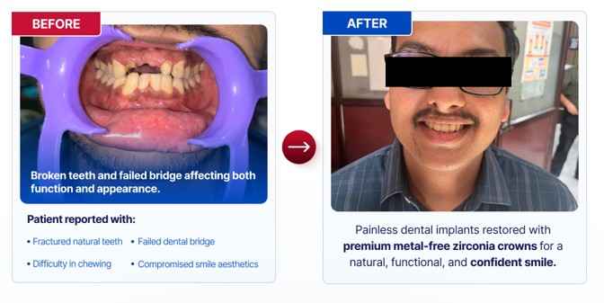

This case involved a visible midline spacing (diastema) between the upper front teeth. The patient wanted a natural, symmetrical smile without bulky restoration.
After smile analysis and shade planning, we prepared a conservative veneer treatment plan with minimal enamel reduction. Custom veneers were designed to close the gap while preserving natural tooth proportions.
Result: A balanced smile line, closed diastema, and improved confidence with a natural look.
This comprehensive case involved complete tooth replacement with advanced dental implants for a patient needing full mouth rehabilitation. The goal was to restore function, aesthetics, and confidence through implant-supported restoration.
We performed detailed bone assessments, implant planning with 3D imaging, and bone grafting where necessary. Multiple implants were strategically placed and restored with custom abutments and crowns for optimal function and natural appearance.
Result: Fully functional natural-looking smile with permanent implant solutions, improved chewing ability, and restored quality of life.
Before: Teeth restoration neededAfter: Full implant restoration
This full mouth rehabilitation demonstrates a staged implant approach combining strategic implant placement, bone grafting where needed, and final implant-supported crowns to restore both function and smile aesthetics.
Key steps included detailed smile analysis, CBCT-guided implant planning, atraumatic extractions, site preservation grafting, implant placement with temporary prosthesis, and final restorations after osseointegration.
Treatment Goals: Restore chewing function, correct vertical dimension, achieve natural tooth proportions, and provide a long-term predictable solution.
Result: Restored occlusion, improved facial support and smile aesthetics — the patient reported markedly improved comfort and confidence.
A patient presented with severe facial swelling tracking up towards the eye and severe discomfort. Urgent, painless root canal therapy with appropriate infection control and immediate restoration resolved symptoms and restored function.
Treatment included atraumatic single-visit RCT under local anesthesia, thorough disinfection, and placement of a full-coverage cap to protect the tooth structure and restore aesthetics.
Result: Rapid resolution of swelling and pain, preserved tooth with durable restoration, and improved patient comfort.
This case involved a persistent soft tissue concern that demanded careful diagnosis, precise treatment planning, and a gentle, minimally traumatic approach to restore comfort and oral function.
Our treatment strategy focused on detailed clinical assessment, selective surgical intervention, and structured follow-up care to ensure smooth healing and symptom reduction.
Result: Improved comfort, better healing, and a more stable functional outcome for the patient.
This case involved recurrent pain, gum swelling, pus discharge, and a facial scar that kept returning despite previous medicines and surgery at other clinics.
On examination and X-ray, multiple infected teeth were identified as the source of the draining sinus. A non-surgical, painless root canal approach was used to eliminate the infection and restore healing.
Result: The pus discharge settled, the sinus healed, and the facial scar improved as the tissues recovered.
This case focused on visible discolouration caused by coffee and tea staining, roughness, and sensitivity that affected both the appearance and comfort of the teeth.
We used a conservative, painless cosmetic approach with tooth-coloured composite material to improve the colour, texture, and overall aesthetics of the smile.
Result: A smoother, brighter, and more natural-looking smile with better comfort and confidence.
Many patients worry about pain before dental implant treatment, yet modern implant dentistry makes the procedure comfortable with local anesthesia, careful planning, and gentle surgical techniques.
This article explains what to expect from painless implant treatment, why metal-free zirconia crowns are popular, and how implants compare with bridges when choosing the better long-term solution.
SEO focus: is dental implant painful, painless dental implant, zirconia crown vs PFM crown, dental implant vs bridge.

Before/after implant transformation
Want Results Like These?
Schedule a consultation and let our experts create your personalized treatment plan.


.jpeg)


.png)
.png)